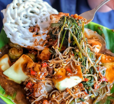
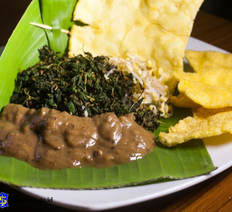
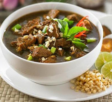
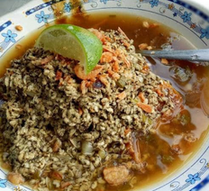

1. Rujak Cingur
a marinated cow snout or lips and noses (cingur), served with boiled vegetables and shrimp crackers.
It is then dressed in a sauce made of caramelised fermented shrimp paste (petis), peanuts, chili, and spices.
It is usually served with lontong, a boiled rice cake.

2. Semanggi Suroboyo
a salad made of boiled semanggi (Marsilea crenata) leaves that grow in paddy fields.
It is dressed in a spicy peanut sauce. It is usually eaten with rice crackers.

3. Rawon
dark beef soup, served with mung bean sprouts and the ubiquitous sambal.
The dark (almost black) color comes from the kluwak (Pangium edule) nuts.

4. Lontong Kupang
lontong with small cockles in petis sauce.